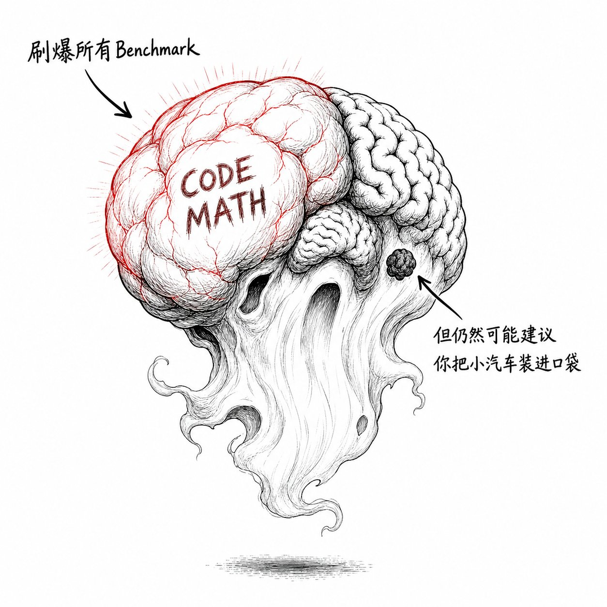
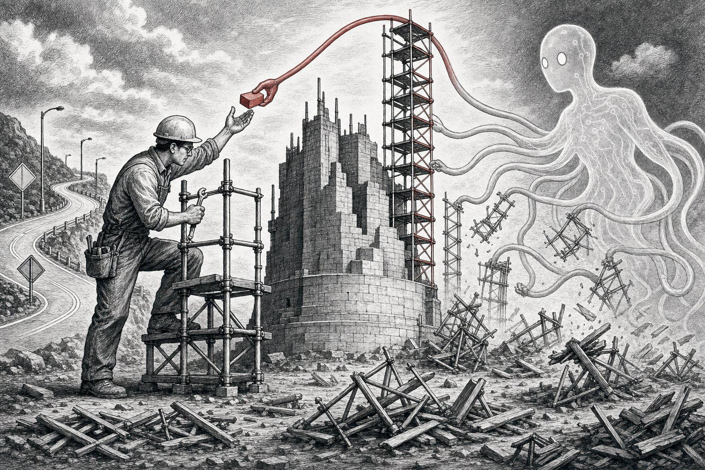

✦ ✦ ✦
01 约四个月前说「代理还要十年」，四个月后说「编程已面目全非」时间线翻转 Karpathy
观点陈述： 2025 年 10 月，Karpathy 在 Dwarkesh 播客上表示功能性 AI 代理「大约还需要十年」才能成熟，认为当时的 agent 产品"就是不行"（"just don't work"），缺乏足够智能、多模态和持续学习能力。但到了 2026 年 2 月，他公开称编程"已变得无法辨认"——"你不是在编辑器里敲代码……那个时代结束了"，转而描述自己用自然语言给 AI 代理分配任务、并行管理其工作的新工作流。同年 3 月，他发布了开源项目 autoresearch（一个约 630 行的脚本），让 AI 代理在两天内自主完成 700 次实验、发现 20 个有效优化，将一个小模型的训练效率提升了约 11%。
为什么反直觉： Karpathy 自己将转折点归因于 2025 年底 Opus 4.5 和 Codex 5.2 的发布——"AI agents barely worked before December 2025, but since then they've become reliable"。这个"几个月内从'不行'到'可靠'"的质变速度本身就挑战了"进展平滑可预测"的直觉。需要指出的是，Karpathy 10 月批评的主要对象是"完全自主实体/云端 agent 产品"超前，并非否定人机协作式 coding agent 的价值；而 2 月的乐观也主要局限于编程工作流和 coding agents，并非泛化到所有 AI agents。他同时强调这些系统仍需要人类的"高层方向、判断、品味、监督、迭代及提示和想法"。
✔ 已通过事实核查 · 措辞已收敛
▲ 人类观察员用跑步速度预测火车 · Karpathy 的时间线翻转
✦ ✦ ✦
02 LLM 不是「成长中的动物」，而是「召唤出的幽灵」认知框架 Animals vs Ghosts
观点陈述： Karpathy 在其 2025 年度回顾中提出一个引人注目的框架：用"成长中的动物"来理解 LLM 是误导性的。他认为 LLM 的神经网络架构、训练数据、算法和优化压力与生物大脑完全不同，更适合看作是"召唤出的幽灵"——一种呈现出极端不规则（jagged）智能形态的实体。一个模型在可验证领域（如数学、代码）通过 RLVR 可以快速尖刺式提升，在需要常识和鲁棒性的任务上却可能被简单的越狱提示欺骗。这种智能的不规则性也让他对基准测试（benchmarks）失去信任——"benchmarks 本质上也是可验证环境，LLM 实验室可以专门针对它们长尖刺"。
为什么反直觉： 业界大量讨论——无论支持者还是批评者——都在使用生物类比：AGI 像"养一个孩子"、模型在"成长"、能力在"进化"。Karpathy 认为这类框架让人错误地期待平滑、各维度均匀的能力增长，而实际 LLM 的能力形态极不规则。不过需要补充的是，Karpathy 在《Animals vs. Ghosts》中也明确承认 Sutton 的批评有价值，表示 AI 领域应保持思想多样性，且他并不完全排斥从动物智能中获得灵感——他同时写道 LLM ghosts 未来可能进一步向 animals 方向微调，也可能保持永久不同，这个框架本身带有"双位数百分比"的不确定性。此外，他提及 in-context learning、memory/CLAUDE.md 等机制也可视为某种 test-time adaptation，不完全排除"学习"的概念。
✔ 已通过事实核查 · 补充了框架的不确定性

▲ 畸形大脑幽灵 · 刷爆 Benchmark 但建议把汽车装进口袋
✦ ✦ ✦
03 AI 代理自主实验循环——发现了人类 20 年经验也遗漏的优化，但远非完美autoresearch 自动化科研
观点陈述： Karpathy 开源的 autoresearch 项目允许一个 AI 代理自主读取训练脚本、提出改进假设、修改代码、运行实验并评估结果。在一夜的运行中代理完成了 126 次实验，将验证损失从 0.9979 降至 0.9697；在持续两天的运行中处理了约 700 次自主更改，找到约 20 个可迁移到更大模型的优化。引人注目的是，Karpathy 本人承认代理发现了注意力缩放和正则化中的疏漏——这些是他"手动检查了约 20 年都没注意到的"。然而需要看到另一面：社区用户在 Mac Mini M4 上复现时，35 次实验中 26 次失败或崩溃，成功运行的 7 次呈现一个模式——"模型变简单反而变好了"（"the model got better by getting simpler"），但这个结论来自单个社区个案，不应过度泛化。
为什么反直觉： 直觉上 AI 代理做自动实验无非是更快地重复人类已知的调参流程。但实际结果展现出多个张力：(1) 代理发现了 Karpathy 本人长期未察觉的优化空间——暗示人类专家的直觉盲区；(2) 社区运行中"简化模型反而改善"的模式与"更大更复杂 = 更好"的主流趋势形成对比；(3) 但该系统的局限性同样明显——两天的运行产生 700 次实验的同时也引发了"是否会污染验证集"的担忧，前沿模型训练规模的复杂度远超 autoresearch 处理的范围（Karpathy 自己承认 at scale "a lot more complex"），且 Karpathy 所指的适用范围仅限于"可高效评估的指标"（reasonably efficient to evaluate），不应直接外推到所有领域。此外，批评者指出 autoresearch 与 Google 等实验室早已使用的 AutoML 方法有重叠——Karpathy 反驳说传统 AutoML 依赖随机变异或进化算法，而 autoresearch 使用 LLM 自主阅读论文、学习前序实验、编写任意代码，"根本不是一个级别"（"not even close"）。
⚑ 修正后 · 补充了复现失败率/验证集风险/适用范围

▲ AI 从人类没在意的方向绕到前面，递来关键的砖